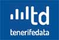
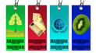
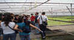
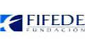

| Consulta del tiempo de Tenerife | Estaciones meteorológicas | ¿Qué buscas? | |
| Vivir en TenerifeDescubre TenerifeEmpresasServicios y trámitesEl CabildoTemas | |||
| Estás en: Inicio > Empresas | |||
> Empresas | |||
Firma electrónica de contratos Las empresas adjudicatarias de contratos pueden incorporar su firma electrónica a través de la aplicación informática del Cabildo de Tenerife llamada Portafirmas | Plataforma de Contratación del Sector Público Es el principal punto de acceso a la información sobre la actividad contractual del Sector Público, facilitando la información sobre las convocatorias de licitaciones y sus resultados de todos los organismos que lo componen. Más información de Plataforma de Contratación del Sector Público | ||
 | Antiguo Perfil del Contratante del Cabildo de Tenerife y Plataforma de Contratación del Sector Público Consulta el histórico de contratos del Cabildo de Tenerife en el antiguo Perfil de Contratante o accede a la Plataforma de Contratación del Sector Público. |  | Información económico-financiera del Cabildo Información económico-financiera del Cabildo de Tenerife Más información de Información económico-financiera del Cabildo |
Facturación electrónica Las personas emprendedoras pueden, a través de la Unidad de Promoción Económica, acceder a financiación tanto pública como privada para la puesta en marcha y el desarrollo de su proyecto empresarial. | Actualidad económica El Centro de Documentación de Desarrollo Económico te proporciona un dossier diario de noticias e informaciones especializadas y de actualidad en materia económica y el análisis de aquellas de mayor relevancia. | ||
 | Trámites y servicios relacionados con empresas Consultar y acceder de forma segura a todos los procedimientos y servicios del Cabildo de Tenerife Más información de Trámites y servicios relacionados con empresas |  | Tenerife Data El Portal Tenerife Data te ofrece acceso en abierto a la información de relevancia estadística y datos públicos que puedas necesitar. |
|  | Calidad y consumo responsable Información sobre el Centro de Calidad y Consumo Responsable y del Centro de Formación al Consumidor y Promoción de Calidad. | Banco de datos Servicio de recopilación de datos en materia de agricultura, construcción, demografía, sanidad. Más información de Banco de Ideas de Negocios Ambientales Sostenibles | |
|  | Agencia de Empleo y Desarrollo Local La finalidad de la Agencia es fomentar el desarrollo de la ganadería, la pesca y la acuicultura en todo el ámbito insular. | Banco de Ideas de Negocios Ambientales Sostenibles Accede a decenas de proyectos y propuestas empresariales sostenibles para poner en marcha tu negocio. | |
Comercio en Tenerife Información sobre acciones insulares destinadas a la modernización de establecimientos comerciales de la Isla de Tenerife. |  | Fundación Canaria Insular para la Formación, el Empleo y el Desarrollo empresarial (FIFEDE) Esta fundación ofrece información y asesoramiento en materia de empleo, en materia de creación de empresas, intermediación laboral, desarrollo de cursos, seminarios, jornadas... | |
 | Planes y programas de Empresas Consulta los planes y programas puestos en marcha por el Cabildo de Tenerife |  | Why Tenerife? Nace Why Tenerife?, la marca unificada que pretende transmitir las ventajas y oportunidades de inversión que ofrece la Isla para inversores públicos y privados de ámbito internacional. |
| ContactarDirecciones y teléfonosAviso legalPolítica de privacidadPreguntas frecuentesAccesibilidadUso de las imágenesDeportes Tenerife Auditorio de Tenerife Adán MartínOcio en TenerifeTrabajo en TenerifeQue ver en TenerifeEl TeideEl Drago | |||